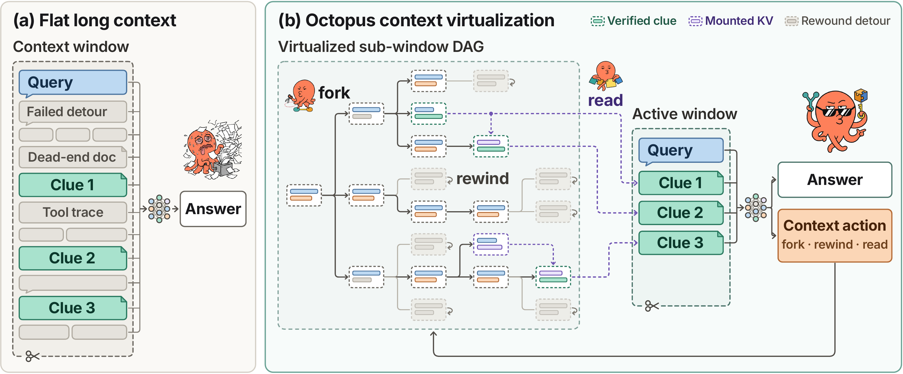
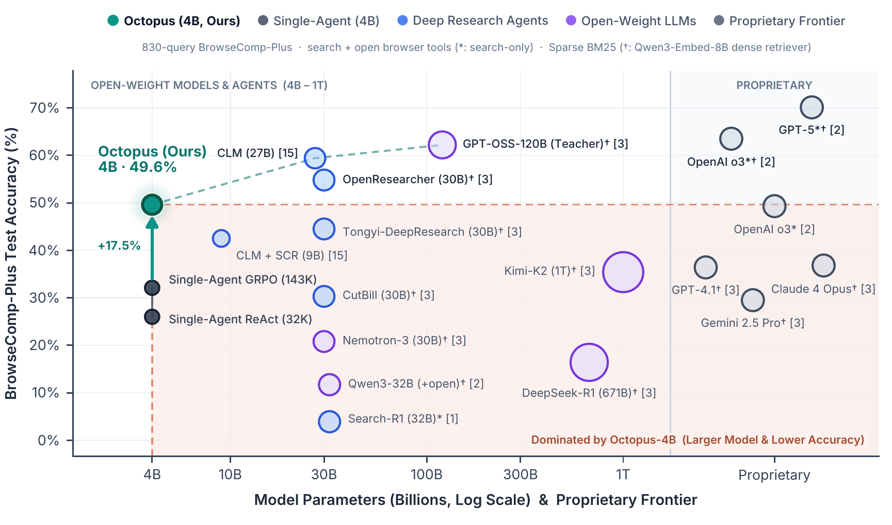
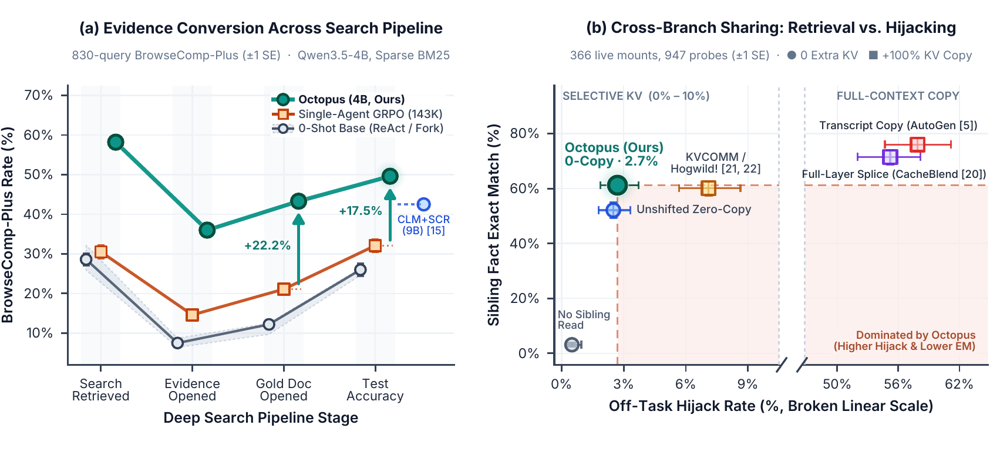
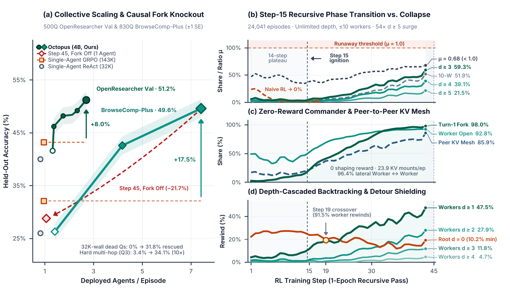

Co-Designed Serving Runtime, GPU Memory Manager & 1D Packed Tree RL
Octopus One Brain, Many Branches for Latent-KV Multi-Agent Reinforcement Learning
Octopus replaces flat append-only agent transcripts and stateless multi-agent chat
wrappers with a stateful, GPU-resident execution DAG—coordinating parallel branches
through O(1) zero-copy radix KV cursors, hijack-free attention-only KV
mounts, and end-to-end differentiable 1D packed DAG-GRPO.
The flat-context trilemma
Why do long-horizon agents stall inside flat windows and stateless multi-agent chat APIs?
Deep search unfolds as a branching tree, yet modern runtimes force every episode onto a single linear tape: failed 8K-page detours pollute working memory (stalling 143K flat RL at 28.5% window utilization and 32.1% accuracy), mid-context edits break prefix caching and corrupt sequential recurrent states (Gated DeltaNet / Mamba-2), and splicing sibling text or full-layer KV caches hijacks over half of subsequent turns (55.2%–57.9%).
Live collective execution, not weight distillation
Trained end-to-end on Qwen3.5-4B, Octopus explores 329.2K tokens across isolated 32K
branches while keeping active per-turn prompts at 26.4K. Disabling fork at
test time on the exact same Step-45 weights collapses paired BrowseComp-Plus
accuracy from 50.8% to 29.1%—proving gains come from live GPU-resident branching and
peer KV sharing.
fork is turned off on
identical trained weights (571 paired queries).
Architecture & Co-Design
A GPU-resident execution DAG from serving to RL.
Octopus models an episode as a cursor-addressed DAG G = (V, Etree, Emount), co-designing serving cursors, layer-selective KV mounting, and 1D packed tree backpropagation across dense, MoE, and hybrid recurrent-attention backbones.

fork, rewind, and zero-copy read_thread KV
mounts.-
01 · Runtime
Server-resident radix cursors
Completed turns persist on GPU as immutable radix cursors. Continuation, parallel
fork, and exact recurrent-staterewindsend only O(|Δm|) deltas via an automatic startup chat-template slicer (0/18,344 tokenization mismatches across 7 model families), achieving an 89.59% GPU KV hit rate and 249× faster 128K prompt assembly (358.5 → 1.44 ms). -
02 · Memory
Hijack-free zero-copy KV mount
In hybrid models, recurrent layers store mutable working memory hB while full-attention layers provide passive associative lookup.
read_threadsplices sibling KV pages exclusively into attention layers under rotation-free monotonic position offsets s(c′B) = max(pB, eA + 1) while recurrent layers skip mounted spans—allocating 0 new KV pages and cutting hijacking from 57.9% to 2.7%. -
03 · Training
1D packed
DAG-GRPOCompiles branched trees, recurrent boundary checkpoints, and live KV mount edges into one unpadded 1D forward–backward pass (up to 262K tokens/tree, 1.12M owned tokens/step, 0 OOM). Single-ownership masking deduplicates shared prefixes while rectangular FlashAttention routes reader gradients directly into producer KV LoRA projections.
| Primitive | Signature | Server-Side Radix KV & Hybrid Recurrent (ht) Semantics | Control-Flow & Budget Contract |
|---|---|---|---|
fork |
fork({id: prompt, ...}) |
Shares parent GPU radix KV prefix in O(1) via reference counting (+K); clones recurrent checkpoint hend(cfork). | Spawns parallel child threads, each granted an isolated Bthread = 32K growth budget. |
read_thread |
read(branch, [a, b]) |
Zero-copy mounts sibling KV pages cA[sA:eA) into attention layers Lmount w/ monotonic jump; recurrent layers skip span. | Injects a ~15-token metadata stub into reader prompt without copying sibling text or consuming KV pages. |
rewind |
rewind(step=k, note) |
Restores step-k cursor ck and exact pre-detour recurrent state hk; appends concise diagnostic pivot note. | Reclaims dead-end steps k + 1 … t from branch budget while keeping pruned leaves in the RL credit graph. |
wait |
wait(branches=[...]) |
Suspends caller cursor at zero active compute while retaining its GPU handle until children complete. | Returns compact branch status summaries and step manifests available for read_thread. |
done |
done(answer, evidence) |
Freezes cursor as COMPLETED and pins its physical KV pages in the GPU radix pool for parent/peer mounts. |
Enforced via a 2K answer reserve and 1-turn untrainable close reminder (mℓ,t = 0) preventing policy collapse. |
Deep Search Frontier & KV-Mount Benchmarks
A 4B sparse-BM25 policy atop the sub-27B frontier.
Trained on 3,040 OpenResearcher queries over a 14.9M-document corpus and evaluated zero-shot on BrowseComp-Plus (830 queries, 100K-document corpus, 0 question overlap).

| System / Agent Policy | Backbone | Retriever & Tools | Context Used / Cap | Gold Open Rec. | OR Val Acc. | BrowseComp-Plus |
|---|---|---|---|---|---|---|
| Single-Agent ReAct (32K) | Qwen3.5-4B | BM25 (search+open) |
32.6K / 32K | 12.2% | 40.0% | 26.0% |
| Multi-Agent Fork (0-Shot) | Qwen3.5-4B | BM25 (search+open+tree) |
38.1K | 12.5% | 41.6% | 26.3% |
| Single-Agent GRPO (143K Flat) | Qwen3.5-4B | BM25 (search+open) |
40.8K / 143K | 21.1% | 43.2% | 32.1% |
| CLM + SCR (In-Place Edit RL) | Qwen3.5-9B | BM25 (search+open+ret) |
Multi-edit (≤32K) | — | — | 42.5% |
| DeepSeek-R1 / Kimi-K2 | 671B / 1T | Dense (Qwen3-Embed-8B) |
≤128K | — | — | 16.4% / 35.4% |
| GPT-4.1 / Claude 4 Opus | Proprietary | Dense (Qwen3-Embed-8B) |
≤128K–200K | — | — | 36.4% / 36.8% |
| Tongyi-DeepResearch | 30B-A3B | Dense (Qwen3-Embed-8B) |
≤128K | — | — | 44.5% |
| OpenAI o3 (Snippet-Only) | Proprietary | BM25 (search-only) |
≤200K | — | — | 49.3% |
| Octopus (Dmax = 1, Parallel Team) | Qwen3.5-4B | BM25 (search+open+tree) |
143.5K (32K/br) | 37.7% | 51.2% (+8.0) | 42.6% (+10.5) |
| Octopus (Dmax = ∞, Recursive DAG) | Qwen3.5-4B | BM25 (search+open+tree) |
199.0K net (329K expl.) | 43.3% (+22.2) | 46.6% (Step 20) | 49.6% (+17.5) |

read_thread mounts (947 probes, 52% with longer sibling eA > pB),
Octopus retains 92.2% full-text answer information at 2.7% hijacking with 0 extra KV pages.| Cross-Branch Sharing Mechanism | Extra KV Memory | Full-Text Info Retained | Exact Match (Longer Sib.) | Policy Drift ΔNLL | Off-Task Hijack Rate |
|---|---|---|---|---|---|
| No Sibling Read (Control) | 0 Pages | 0.0% | 0.031 (0.032) | 0.000 | 0.5% |
| Transcript Text Copy (AutoGen) | +100% (+Lmount) | 100% | 0.760 (0.786) | +0.196 | 57.9% |
| Full-Layer KV Splice (CacheBlend) | +100% (+Lmount) | 98.1% | 0.715 (0.731) | +0.195 | 55.2% |
| Unshifted Zero-Copy Attention KV | 0 Pages (0-Copy) | 86.1% | 0.521 (0.449 · RoPE flip) | +0.003 | 2.5% |
| RoPE-Relocated KV Copy (KVCOMM) | +100% (+Lmount) | 91.7% | 0.601 (0.611) | +0.015 | 7.1% |
| Octopus Zero-Copy Mount (Ours) | 0 Pages (0-Copy) | 92.2% (96.5%–97.3% rec.) | 0.612 (0.613) | +0.007 (29× ↓) | 2.7% (21× ↓) |
Emergent Collective Scaling
Step-15 phase transition into a commander–mesh hierarchy.
Exposing branching primitives without RL yields zero gain over 32K ReAct (26.3% vs.
26.0%). Under pure 0/1 outcome DAG-GRPO, Qwen3.5-4B self-organizes
recursive division of labor from scratch.

Self-organized division of labor · 0 shaping reward
Clean orchestrator roots, peer KV meshes, and 10× multi-hop accuracy.
Past Step 15, root threads delegate on Turn 1 in 98.0% of episodes (up 38×) while
offloading 92.8% of noisy 8K-page opens and 91.5% of dead-end rewind
calls to sub-branches. Workers coordinate horizontally through an emergent peer-to-peer
read_thread mesh (96.4% lateral worker↔worker mounts).
Recursive branching rescues 31.8% of queries that hit the 32K single-agent context wall (0% at 0-shot) and lifts accuracy on the hardest third-quartile multi-hop queries by 10× (3.4% → 34.1%).
- Turn-1 root delegation
- 2.6% → 98.0% (38×)
- 8K page opens offloaded to workers
- 92.8%
- Peer-to-peer KV mesh episodes
- 85.9% (23.9 mounts/ep)
- Hard multi-hop (Q3) accuracy
- 3.4% → 34.1% (10×)
- 1D prefix-tree token scaling
- 8.1× avg / 11.1× peak (0 OOM)
- Cross-architecture KV transfer
- Qwen3 96.9% · Granite-4.0-H 98.5%
Citation & Artifacts
Cite Octopus.
Code, SGLang 0.5.19 & AReaL cursor/mount overlays, Harbor containerized SWE bundles, and pre-built OpenResearcher / BrowseComp-Plus BM25 indices are publicly available.
@techreport{sha2026octopus,
title = {Octopus: One Brain, Many Branches for Latent-KV Multi-Agent Reinforcement Learning},
author = {Sha, Tianming and Li, Junnan and Zhao, Siqi},
institution = {Stony Brook University and University of Wisconsin--Madison and University of Minnesota},
year = {2026},
month = nov,
url = {https://shatianming5.github.io/octopus/},
pdf = {https://shatianming5.github.io/octopus/assets/Octopus.pdf}
}